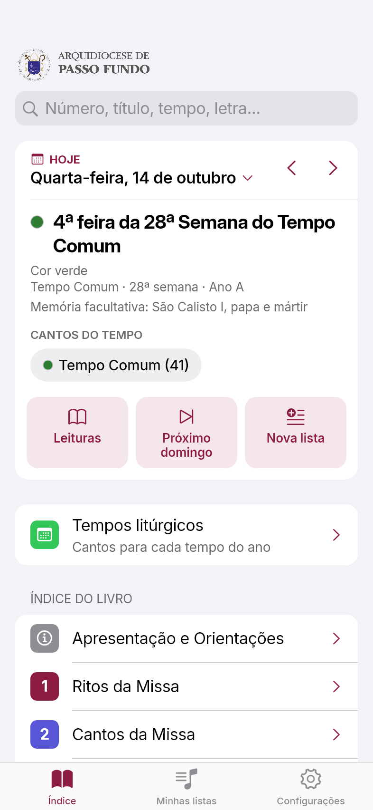
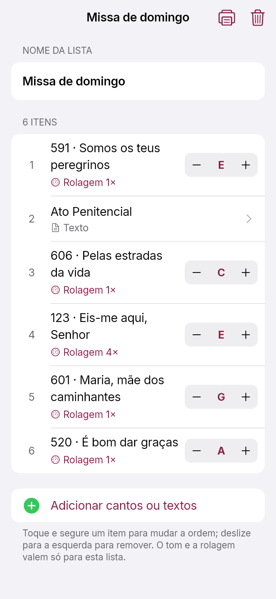
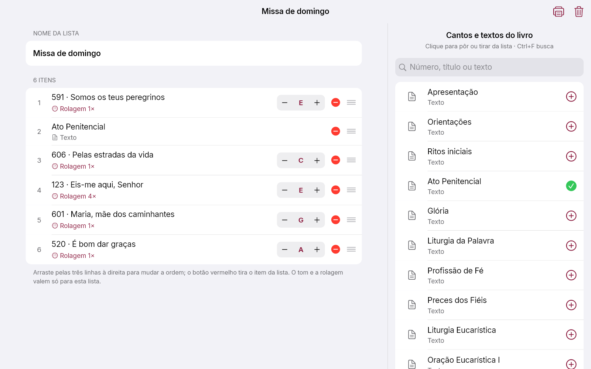

Aleluia! Cantos e Orações
O livro de cantos da Arquidiocese no celular e no computador: partituras, cifras, letras, orações e a liturgia do dia — tudo funcionando sem internet.
Versão 1.0.0 · Grátis · Android 7 ou mais novo · Windows 10 ou 11
No iPhone o app ainda não está disponível. Por enquanto, ele pode ser instalado no Android e no Windows.
Recursos
O livro inteiro, pronto para a celebração
Feito para quem canta, toca e prepara a liturgia — com o mesmo conteúdo do livro impresso.
Mais de 770 cantos
Partitura, cifra e letra de cada canto, além dos ritos da missa e das orações do livro.
Quatro formas de ver
Partitura, partitura com cifras, cifra ou só a letra — troque com um toque.
Muda o tom
A cifra é transposta para qualquer tom, e o app lembra o tom escolhido para cada canto.
Liturgia do dia
Tempo, cor e celebrações do dia, com as leituras da missa (CNBB) guardadas no aparelho.
Listas para a missa
Cantos e textos na ordem, com o tom de cada um. Envie pelo WhatsApp e a equipe importa igualzinho.
Feito para quem toca
Rolagem automática, pedal Bluetooth, tela sempre acesa e vídeo-aulas de centenas de cantos.
Imprimir
Um canto ou a lista inteira, cada canto numa folha, com o tom escolhido.
Busca rápida
Por número, título, tempo litúrgico ou qualquer trecho da letra.
Sempre atualizado
Correções de cantos, partituras e leituras chegam sozinhas, sem reinstalar. Achou um erro? Relate pelo próprio app.
Telas
Simples como folhear o livro


No computador
Monte as listas com mouse e teclado
- Os cantos do livro numa coluna ao lado da lista: um clique põe ou tira.
- Arraste para mudar a ordem e ajuste o tom de cada canto.
- Ctrl + F busca, Ctrl + P imprime.
- Leve a lista para o celular pelo WhatsApp Web.

Como instalar
Pronto em um minuto
O app não está nas lojas: ele é baixado direto daqui. Siga o passo a passo do seu aparelho.
- No celular, toque em Baixar para Android. O arquivo
Aleluia.apkcomeça a baixar. Se o navegador avisar que o arquivo pode ser perigoso, toque em Baixar mesmo assim. - Quando o download terminar, toque em Abrir.
Se o aviso já sumiu, abra o app Arquivos (ou Downloads) e toque em
Aleluia.apk. - Na primeira vez, o Android pede licença: toque em Configurações, ligue Permitir desta fonte e volte.
- Toque em Instalar. Se o Play Protect avisar, toque em Mais detalhes → Instalar mesmo assim. Em celulares Xiaomi, a verificação de segurança pode pedir alguns segundos antes de liberar o botão.
- Pronto! Toque em Abrir ou procure o ícone Aleluia! na tela do celular.
Para atualizar, baixe e instale de novo pelo mesmo botão: o app é instalado por cima e suas listas, favoritos e tons continuam. Cantos e partituras se atualizam sozinhos pela internet.
- No computador, clique em Baixar para Windows. O arquivo
Aleluia-Instalador.exevai para a pasta Downloads. Se o navegador disser que o arquivo não é baixado com frequência, clique em ⋯ → Manter → Manter mesmo assim. - Abra o
Aleluia-Instalador.exe. - Se aparecer “O Windows protegeu o computador”, clique em Mais informações e depois em Executar assim mesmo. O aviso aparece porque o programa é novo e ainda não tem assinatura digital paga.
- Marque se quer um atalho na área de trabalho, clique em Instalar e depois em Concluir.
- Pronto! Depois, é só procurar Aleluia no menu Iniciar.
Não precisa de senha de administrador. Para atualizar, rode o instalador novo: ele substitui a versão anterior e mantém suas listas.
Atalhos de teclado
| Ctrl + F | Busca na coluna de cantos, ao montar uma lista |
| Ctrl + P | Imprime o canto ou a lista aberta |
| → ou Page Down | Desce a tela; no fim do canto, vai para o próximo (como o pedal) |
| ← ou Page Up | Sobe a tela; no começo, volta para o anterior |
| Botão direito | Numa lista: compartilhar, copiar, imprimir, duplicar ou excluir |
Dúvidas
Perguntas frequentes
Como levo uma lista do celular para o computador?
Em Minhas listas, toque e segure a lista (no computador, botão direito) e escolha Compartilhar ou Copiar mensagem. Envie pelo WhatsApp. No outro aparelho, copie a mensagem inteira e toque em Importar, o ícone ao lado do +.
Precisa de internet?
Não. Cantos, partituras, orações e as leituras da missa ficam guardados no aparelho. A internet só é usada para baixar atualizações e abrir as vídeo-aulas.
Achei um erro numa cifra ou letra. Como aviso?
Abra o canto e use ⋯ → Reportar problema. Na cifra, toque e segure a linha errada para mandar exatamente qual é. A mensagem vai pronta pelo WhatsApp.
Um canto corrigido ainda aparece errado.
Vá em Configurações → Atualizações → Verificar agora. O app baixa as correções mais recentes.
Não consigo instalar no celular.
O app precisa do Android 7 ou mais novo. Confira também se a opção Permitir desta fonte foi ligada para o navegador que fez o download.
Tem para iPhone?
Ainda não. Por enquanto, o app está disponível para Android e Windows.